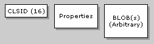
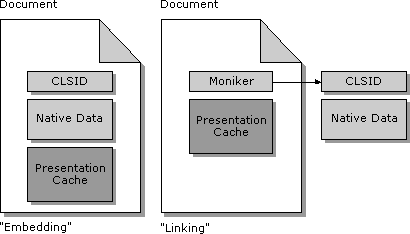
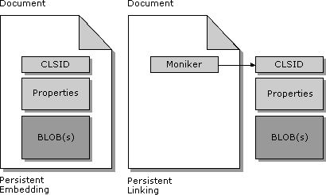

| ||||||
Note This section is primarily background material to set the stage for a later section. Those interested only in the details of writing good Internet-aware controls and containers can skip directly to that section.
For the purposes of this discussion, any given control can potentially have the following types of persistent data:
Note The description of these three elements is for conceptual purposes only. These elements do not describe any kind of actual stream, file, or data format.
The following illustration shows the CLSID, properties, and BLOBs.

There might be controls that have no persistent data; none of these elements exist in a document. In that case, the container has the CLSID of the control (directly from the CLSID attribute in HTML or indirectly from CODE) and the control needs no other initialization after creation.
When a control has any persistent data at all, the CLSID element always exists along with one or both of the other two elements. How these elements are stored in relation to the container document involves the concepts of "embedding" and "linking," which originated in OLE Documents (the OLE compound document architecture), described in a following section. Because of certain limitations inherent in the compound document model, that section extends the "embedding" and "linking" concepts as persistence mechanisms only to allow more flexibility in control implementations. Additional sections provide notes regarding the use of IPersistMoniker, HTML, and progressive property retrieval.
Many readers will already be asking themselves how a control might be able to split its properties element from its BLOB elements so that the CLSID and properties are stored in one location and the BLOBs in other locations. This topic is described further in a later section.
"Object Linking and Embedding," as OLE was originally called in its version 1.0 days, introduced the idea of "embedded compound document objects" and "linked compound document objects." These concepts carried forward into OLE 2:
The following illustration illustrates embedding and linking.

Because of the demands of the presentation cache, a container in OLE Documents must always provide an instance of IStorage to each embedded or linked object. In the embedding case, the class code for that object must itself implement IPersistStorage. In the linking case, OLE provides the "default handler" that handles the moniker and the cache in the container document (through IPersistStorage), but the class code itself has to provide whatever interfaces are appropriate for the binding behavior of the moniker. For example, if a File moniker is used, the class code must implement IPersistFile to learn from the moniker where the native data resides on the file system.
Note also that an embedded (or even linked) object can internally, in its own native data, store references to external data sources, essentially doing a simpler form of "linking" unbeknown to the container. The system-provided "Package" object is a perfect example of this. A Package can contain an "embedded" file or a "command line" along with an icon and label (which make up its presentation in the document). When a file is embedded in the package, the file image itself makes up the package's "native" data. When the package contains a command line, the command line is embedded along with the icon and label, but the "native" data is ultimately in some other file in the name space as described by the command line. This can be described as a "link" to that other file, although the link is entirely internal to the package object and is entirely hidden from the container.
While this architecture works fine within the confines of a single high-speed file system, where storage space is cheap and network latency and transfer speed are usually not an issue, it does not apply all that well to an environment like the Internet. In particular there are the following problems:
OLE Controls as first introduced in 1994 gave controls the ability to implement the IPersistStreamInit persistence mechanisms for the "embedding" case, eliminating the caching issue in the process and providing a lightweight alternative to IPersistStorage. However, OLE Controls was not originally concerned with complete flexibility in persistence mechanisms nor alternate forms of "linking" that addressed all of these issues.
This article extends the concepts of embedding and linking to work outside the particulars of OLE Documents (IPersistStorage, caching, IPersistFile), specifically to work with all available persistence mechanisms, as well as with URL monikers and the possibility of asynchronous retrieval of linked data. The concepts of embedding and linking are described as follows:
Note The "linking" architecture of OLE Documents is itself more than just a persistence mechanism because it also involves various user interface standards, such as the stipulation that a linked object cannot be in-place activated. Any user interface guidelines concerned with OLE Documents are not of interest to what this section calls "Persistent Embedding" and "Persistent Linking" because the mechanisms here are solely concerned with the location of data and have nothing to do with user interface models. A control can, thus, work with persistently linked data while still being in-place activated.
In addition, in OLE Documents the idea of "linking" generally means that the source itself (of the linked object) supplies the exact moniker to name the object. In "persistent linking" the container provides the moniker to the object, and the object binds that moniker to some piece of storage in which the object reads or writes its data.
The following illustration shows persistent embedding and persistent linking.

Again, a later section covers the case where one or more of the control's properties name other external storage locations so that the BLOBs do not have to be stored with the control's properties in either the embedding or linking case. For the purposes of this discussion, the assumption is that any inline BLOBs in the embedding case are still small so that the byte count of the properties and the BLOBs still fall within a reasonable size. One can simply see these small portions of binary data as additional control properties.
The extensions that enable these generic persistent mechanisms are as follows:
The following table summarizes these IPersist* interfaces.
| Storage location | Persistence interface | Comments |
| Storage Element | IPersistStorage | Standard in OLE Documents; the container provides an IStorage pointer to the storage element in which the control can create any structure it wants. This will be potentially common for author-time scenarios, typically rare for publish/run-time scenarios. |
| Expandable Stream | IPersistStreamInit, IPersistStream | Most suitable for small and fully embedded controls; all the data including paths goes into one stream, which can be easily placed inline in the document. IPersistStreamInit is a superset and replacement for IPersistStream. IPersistStreamInit should be used preferentially. |
| Fixed-Size Memory Block | IPersistMemory | Alternative for IPersistStreamInit, but allows the container to specify a fixed-size memory allocation as the storage medium, with the restriction that the control does not attempt to access data outside that boundary. |
| "Property Bag" (container-supplied) | IPersistPropertyBag | Alternative for IPersistStreamInit in which the control tells the container to save and load individual properties (described in a VARIANT) through IPropertyBag. The implementor of the property bag can deal with each property in any way it wants. |
| "Property Bag 2" (container-supplied) | IPersistPropertyBag2 | Alternative for IPersistStreamInit in which the control tells the container to save and load individual properties (described in a VARIANT) through IPropertyBag2. The implementor of the property bag can deal with each property in any way it wants. |
| File | IPersistFile | The object is given a UNC path name and is told to read or write its data to that file. |
| External: named with a moniker | IPersistMoniker | The object is given a moniker and told to read and write its data to whatever storage mechanism (IStorage, IStream, ILockBytes, or IDataObject) it wants when dealing with that external data. The storage mechanism can also be asynchronous; in that case, the IPersistMoniker implementation understands the necessary considerations. |
Details about IPersistMemory, IPersistPropertyBag, and related interfaces are provided in a later section. For information on IPersistMoniker, see URL Monikers Overview.
These extensions are basically concerned with the protocol through which a container communicates persistence intentions (IPersist*::Load and so on) to controls in its document, which also addresses the needs of author, publish, and run-time scenarios. At author time, the designer might want to keep all the data for all controls inline so there is only one document to manage, or some controls might be told to save and load their data in another site already. At publish time, the author might want to store the bulky portions of data (controls with large BLOBs) in other locations, thus breaking up the document into its final distribution on the Internet. At run time, then, the controls in the document will access their data as instructed by the container.
An Internet-aware object or control is one that understands the options available here and implements support for whatever mechanisms it needs and can support best. Such a control need not support all storage cases and can choose to support only those it sees fit to support or can support reasonably well. At a minimum, controls that have any persistent data should implement at least IPersistStreamInit or IPersistStorage (whichever is most suitable), adding other interfaces as features demand them. For example, controls whose persistent data is made up entirely of name/value property pairs will likely implement IPersistPropertyBag as well. Information about why a control might choose to implement IPersistMoniker is provided in a later section.
If a control for some reason only implements one persistence interface out of IPersistStreamInit, IPersistStorage, IPersistMemory, and IPersistPropertyBag, it must mark itself with the appropriate component category to say that support for that interface in a container is mandatory. These categories are described in a later section. Controls that implement IPersistStorage and can work in down-level containers as simple compound document embeddings can mark themselves with the "Insertable" registry key so that they appear in the Insert Object UI of such containers (a category is not used because down-level containers don't see categories).
Note that it takes less than 200 bytes to persistently save values for all of the standard properties defined for a full-featured OLE Control, such as text, caption, colors, drawing styles, and font; if the control wants to include a small metafile for immediate rendering, adding a few hundred more bytes should not be a big problem.
On the other hand, containers should support—for Persistent Embedding—as many different persistence interfaces as reasonable with IPersistStreamInit and IPersistStorage as a baseline, adding support for IPersistMemory for optimization purposes and IPersistPropertyBag for Save-As-Text capabilities. Authoring tools and containers must also pay attention to component categories when they do not implement support for any one interface so that they can avoid inserting a control into a document when its persistence needs cannot be met.
In this Persistent Embedding case as well, the container chooses which interface it will attempt to use first with any given control. Some containers might look for IPersistStorage before IPersistStreamInit; others will try IPersistPropertyBag before all others, or will place IPersistMemory before IPersistStreamInit because the former might be more efficient for the container. Because the size of embedded data is of high concern for Internet-aware containers, IPersistStreamInit and IPersistMemory should generally be given priority over IPersistStorage and IPersistPropertyBag because they generally produce the smallest amount of data.
Note that it is perfectly reasonable for a container to have a control save its data into any location specified in any of these interfaces, after which the container copies the resulting binary data to another location altogether. The container then saves a reference to that other location so that when loading the control, it can recreate the necessary storage structure and hand it back to the control. This option, by the way, has been available in OLE since version 1.0.
For Persistent Linking, containers need not be concerned with the interfaces directly but must understand its own usage and storage of monikers, specifically URL and other asynchronous monikers. Because the monikers themselves internally query for and call the various IPersist* interfaces, the container does not have to understand those persistence interfaces directly. Such intelligence is encapsulated in the monikers.
In this case, the moniker itself chooses the priority because the container merely needs only to choose how it will save the moniker. As described in URL Monikers Overview, such monikers will look for interfaces in the order of IPersistMoniker, IPersistStreamInit, IPersistStorage, IPersistMemory, and IPersistFile, the latter two requiring that all the data is available before any members of either interface can be called.
The use of IPersistMoniker is questionable and has limitations. This issue is described in a later section.
In both embedding and linking cases, the container is responsible for handling the details of asynchronous storage as described in Compound Files on the Internet and URL Monikers Overview. In short, all persistence interfaces other than IPersistMoniker are considered synchronous in that the control expects all the data to be available when it gets a call to IPersist*::Load. In the case of IPersistFile and IPersistMemory, this is explicit because you can't create the file or the memory block unless you have the data.
In the case of IPersistStream[Init] and IPersistStorage, a container can pass either a "synchronous" storage object or a "blocking" storage object. In the "synchronous" case, the container will retrieve all the data before calling IPersist*::Load so nothing has changed from all historical uses of these interfaces. In the "blocking" case, the data might not actually be available, but any call that the control makes to IStorage::OpenStorage, IStorage::OpenStream, or IStream::Read (and so on) will simply not return until the data is actually available. From the control's point of view, the storage or stream objects are simply slow—the control won't usually care because it just waits for the call to return. But from the container's point of view, simultaneously loading multiple controls using asynchronous "blocking" storage might be a perfect way to manage multiple data transfers.
As described in a previous section, the IPersistMoniker interface is the primary interface through which an asynchronous moniker will attempt to have a control initialize in the Persistent Linking case. In general, IPersistMoniker is the successor of IPersistFile, which allows persistence to and from any abstract location that can be named with a moniker as opposed to only a file name. The interface is defined as follows (see URL Monikers Overview for complete information):
interface IPersistMoniker : public IPersist
{
HRESULT IsDirty(void);
HRESULT InitNew([in] IMoniker* pmkStore, [in] DWORD grfMode
,[in] IBindCtx* pbindctx);
HRESULT Load([in] IMoniker *pmkStore, [in] DWORD grfMode
, [in] IBindCtx *pBindCtx);
HRESULT Save([in] IMoniker *pmkStore, [in] BOOL fRemember
, [in] IBindCtx *pBindCtx);
HRESULT SaveCompleted([in] IMoniker *pmkStore);
HRESULT GetCurMoniker([out] IMoniker **ppmkStore);
}
In short, this interface is just like IPersistFile (plus the InitNew member) except that where IPersistFile takes a file name string, IPersistMoniker takes a moniker and a bind context. The semantics of the Load and Save members are as follows:
pmkStore->BindToStorage(pBindCtx, ..., IID_<xxx>, &pInterface);
if (load)
pInterface->[Read](...) // may be asynchronous
else if (save)
pInterface->[Write](...)
That is, the control is asked to save or load itself from a moniker using the supplied bind context, and the control is responsible to call IMoniker::BindToStorage to get the appropriate storage-related interface to which it reads (or writes) its data. This might involve asynchronous considerations as described in the Internet Files and URL Moniker documents. When the control obtains an asynchronous IStorage or IStream, it has to ensure that it can handle IMoniker::BindToObject, returning a NULL interface pointer that will be passed to IBindStatusCallback::OnDataAvailable when it becomes available; IStream::Read and other reading calls that might return E_PENDING; and data that becomes available in segments through IBindStatusCallback::OnDataAvailable. The considerations here are the same as for any client of asynchronous monikers, so again, see URL Monikers for more information. A later section also discusses this to some extent in terms of a control's use of "data paths."
Thus, implementing IPersistMoniker is not a requirement, even for asynchronous transfer of persistently linked data that goes on outside the control before any of its other IPersist*::Load members are called. This is because asynchronous monikers themselves (that is, the URL moniker presently) will take whatever data it sees at the named location and package that data in some storage object appropriate for other IPersist* interfaces. That is, if the moniker does not find IPersistMoniker on the object, it will query for IPersistStreamInit. If that interface exists, the moniker will wrap up the data in an asynchronous-blocking IStream and pass it to the control. If the interface is not there, the moniker will try other interfaces, such as IPersistStorage, IPersistMemory, and IPersistFile, in turn, wrapping the data in an asynchronous-blocking IStorage if needed, or retrieving all the data and placing it in memory or a file before handing it to the control.
It is useful at this point to describe the relationships between the persistent embedding and persistent linking scenarios described above and the attributes described in HTML Standards, namely the CLASSID, DATA, and PARAM attributes within an OBJECT object.
In the persistent embedding case, the authoring tool that is writing the HTML document first asks the control to save all its data through some persistence interface. After the IPersist*::Save call, the authoring tool has some bucket of control-created bits and the CLSID for the control itself. When writing the HTML OBJECT object, the authoring tool always writes a CLASSID attribute and then includes a DATA attribute describing the control's data in some way. In all cases, the data must have a CLSID in the first 16 bytes to identify the exact format of the data.
In some cases, the stream data might be too large. In that case, the authoring tool might use IPersistPropertyBag to be handed each property in turn, which it would then write into the HTML document as individual PARAM attributes. Other PARAM attributes might also be later added manually to this set by someone editing the HTML directly.
Did you find this topic useful? Suggestions for other topics? Write us!
© 1999 Microsoft Corporation. All rights reserved. Terms of use.